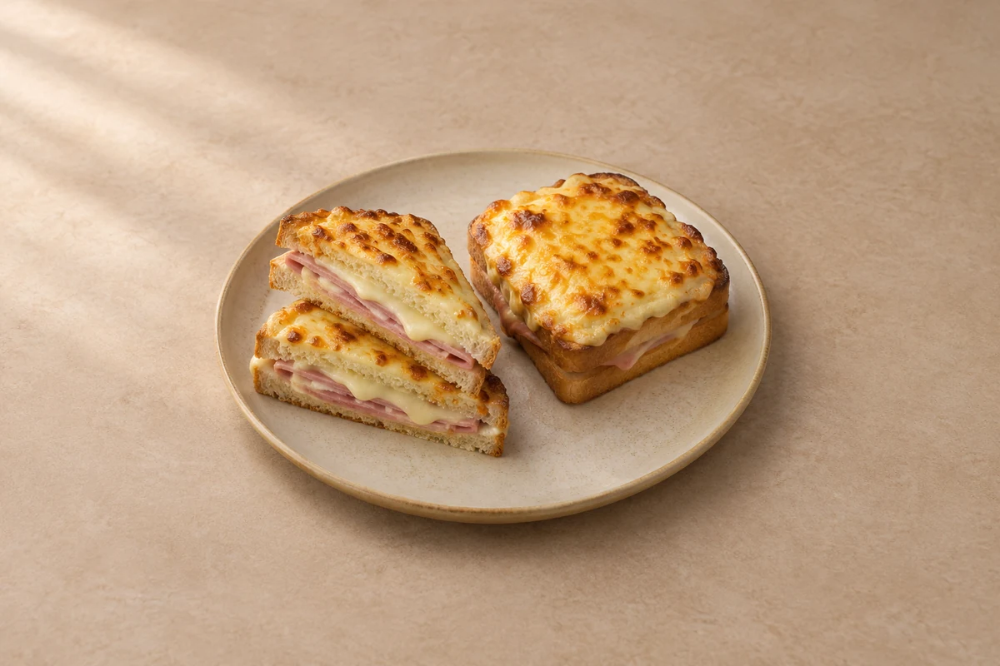

Lunches
Croque Monsieur
Golden ham and Gruyère sandwiches with Dijon mustard, creamy white sauce and a bubbling cheese topping. Serves 2.
Time to allow: 30 min total
Prep10 mins
Cook20 mins
people
Ingredient quantities update automatically

Ingredients
Sandwiches
White sauce
Topping
Method
Heat the oven and toast the bread
Heat the oven to 220°C / 200°C fan. Lightly toast the bread on both sides in a toaster or under the grill until pale golden, then set aside. This helps it hold the creamy filling.Make the white sauce
Melt the butter in a small saucepan over a medium-low heat. Stir in the flour and cook for 1 minute, stirring. Gradually whisk in the milk until smooth, then cook for 2–3 minutes until thick enough to spread. Stir in the nutmeg and season lightly with salt and black pepper.Build the sandwiches
Spread the Dijon mustard over two slices of toast. Divide the ham and the Gruyère from the sandwich ingredients between them. Spread a little white sauce over the inside faces of the remaining slices, then place them on top to close the sandwiches.Add the topping
Put the sandwiches on a baking tray. Spoon the remaining white sauce over the tops, spreading it nearly to the edges. Sprinkle over the Gruyère reserved for the topping.Bake until bubbling
Bake for 10–12 minutes until hot through and the cheese is melted. If the tops need more colour, finish under a hot grill for 1–2 minutes, watching closely, until golden and bubbling.Rest and serve
Leave for 2 minutes, then transfer carefully to plates. Cut in half and serve while the cheese is melted and the edges are crisp.
Tips & leftovers
Storage & leftovers
Cool leftover sandwiches and refrigerate in a covered container within 2 hours; eat within 48 hours. For a fresher result, make the white sauce ahead, chill it separately, and assemble the sandwiches just before baking. Follow the ham packet’s shorter storage limit if given.
Freezing
For the best texture, freeze the bread separately and assemble with fresh filling and sauce. The white sauce can separate and the bread can soften after freezing, so the finished sandwich is best made fresh.
Reheating
Reheat a chilled sandwich once in an oven at 180°C / 160°C fan until the centre is steaming hot throughout. Cover loosely with foil if the cheese browns too quickly. The middle takes longer than the top, so check before serving.
Substitutions
Use Emmental or mature cheddar instead of Gruyère. Semi-skimmed milk also works in the sauce. Replace ham with cooked, well-drained mushrooms for a meat-free version, and choose vegetarian-labelled cheese. Leave out the nutmeg if you prefer.
Keeping leftovers safe
Cool cooked leftovers in small portions and refrigerate within 2 hours. Keep the fridge at 0–5°C and the freezer around −18°C. Freeze suitable leftovers promptly. Defrost fully in the fridge and use within 24 hours. Reheat only once, until steaming hot all the way through. Follow any shorter use-by or opened-pack instructions; using older cooked ingredients does not restart their storage time.
Food-safety guidance: Food Standards Agency: chilling and freezing · reheating leftovers.